Engineering Clubs (Click to see more)
Aero Design
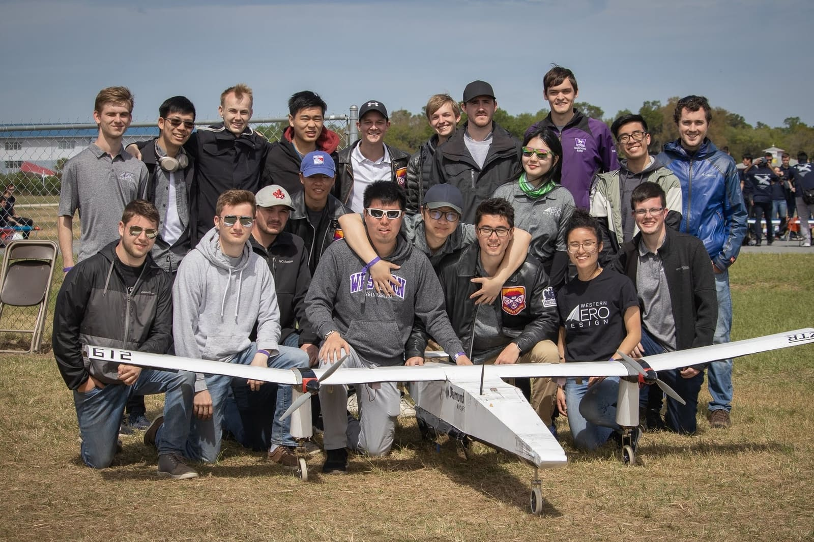


western.aerodesign@gmail.com
https://www.westernaerodesign.com/
Aero Design
Western Aero Design Team specializes in designing, testing and flying heavy lift,
advanced-class aircraft and fully autonomous gliders. We are a completely student-run
mega
project with the goal of simulating a Mars colonization using aircraft. We participate
in
the international SAE Aero Design competition which is annually held in either Fort
Worth,
Texas or Lakeland, Florida. The competition requires us to remotely drop payloads on
targets
and release gliders that must safely and independently maneuver to the landing zone
using
only their onboard telemetry. In order for us to push the boundaries in glider
manufacturing, aerodynamic design, and development of custom mission-control software we
need students from all engineering disciplines.
western.aerodesign@gmail.com
https://www.westernaerodesign.com/
Canadian Society for Mechanical Engineering
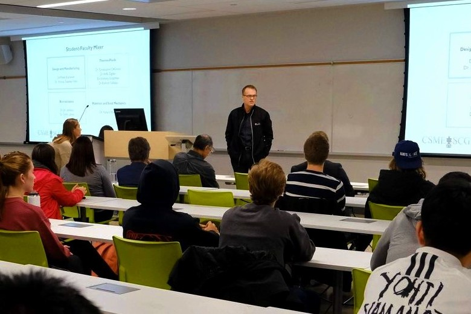
Canada Society for Mechanical Engineering
CSME Western is the student chapter associated with the Canadian Society for Mechanical
Engineering (CSME). Our goal is to create a community within mechanical engineering at
Western. We work to provide events that will help elevate your experience as a
mechanical engineering student, this includes social as well as academic events! Some of
the events we host include an internship panel, student-faculty mixer, industry tours,
and various help sessions for your courses! We encourage students in all years MME to
get involved as well as any first years considering MME.
Chemical Engineering Club
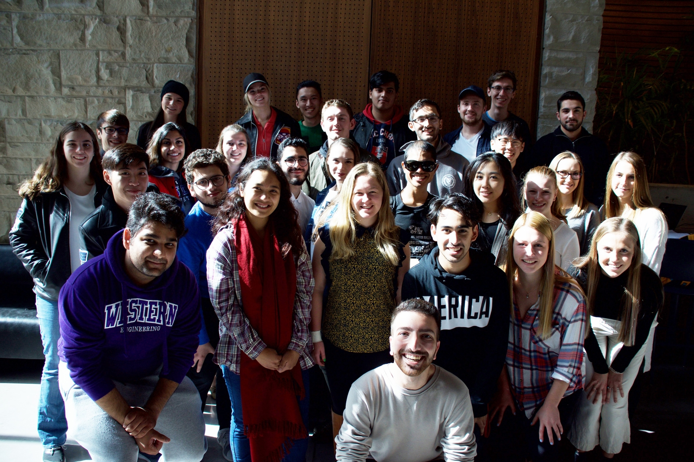
chemclubuwo@gmail.com
Chemical Engineering Club
Western Engineering’s Chem Club is the student chapter at Western University affiliated
with the Canadian Society for Chemical Engineering (CSChE) of the Chemical Institute of
Canada (CIC). Chemical engineering club provides a system to help future chemical
engineers to connect through networking opportunities such as Industry Nights, Chem Club
Mixer. Chem Club is devoted to developing technical background and teamwork skills
through project-based initiatives, as well. If you have any interest in chemical
engineering, whether you’re a first-year or an engineer in another discipline, please
consider joining Chem Club!
chemclubuwo@gmail.com
Engineering Musical
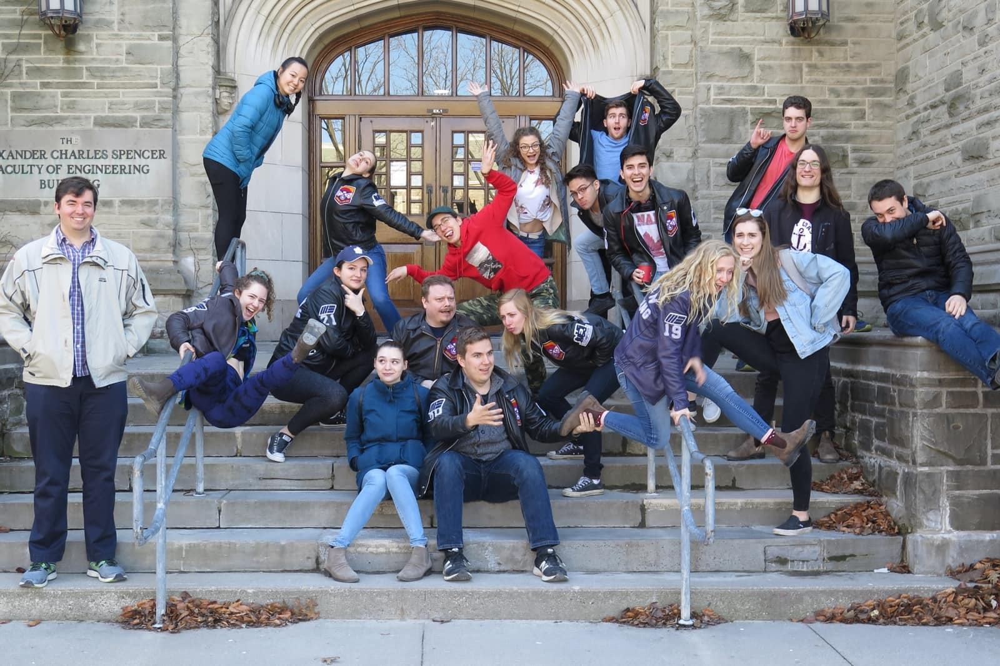
https://twitter.com/uwoengmusical
Engineering Musical
The Western Engineering Musical is a club that oversees the production of the annual
engineering musical held at Western University. The club itself consists of the
executive members, the production team, the backstage crew, the band, and the cast. The
executive and the production team positions are filled during the summer, while the cast
members are selected in the beginning of the fall term. However, every member of the
musical must be currently or previously enrolled in the engineering program. The plots
of the musicals are inspired from popular stories and are performed in a comedian
fashion, as a parody to the original piece with western engineering themes. One very
important part of the musical is the rehearsals which will occur throughout the school
year and are attended by the cast, the band, and some of the production team and
executive members. The rehearsals are where all the performance preparation happens for
the musical and is what many members consider the most enjoyable part of the experience.
This is where the team bonds and goofs around while trying to learn the script and songs
that were created over the summer by the production team. To learn more about the
musical, please do not hesitate to contact us on our Facebook page or get in touch with
any of the executive members. Please follow our social media accounts to stay up to date
with the news and applications of the musical.
https://twitter.com/uwoengmusical
Engineers Without Borders Western
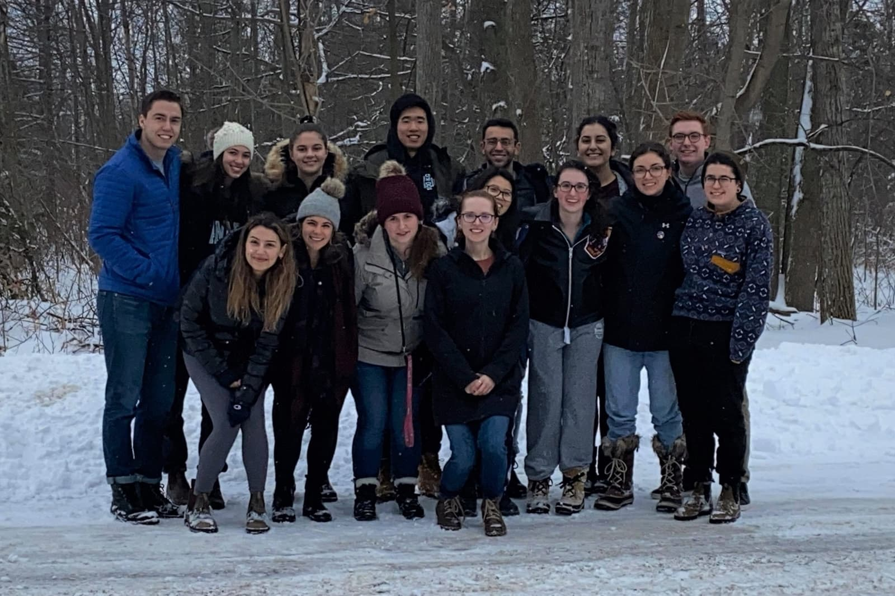
uwo@ewb.ca
https://western.ewb.ca/en/
Engineers Without Borders Western
"We invest in people. We invest in ventures. We advocate for change. At EWB, we strive
to ignite positive change and empower people to tackle global poverty. Our approach to
creating change is systemic. We work to unlock opportunities at multiple levels,
engaging with university students, political figures, entrepreneurs and the entire
Canadian population."
uwo@ewb.ca
https://western.ewb.ca/en/
Formula SAE
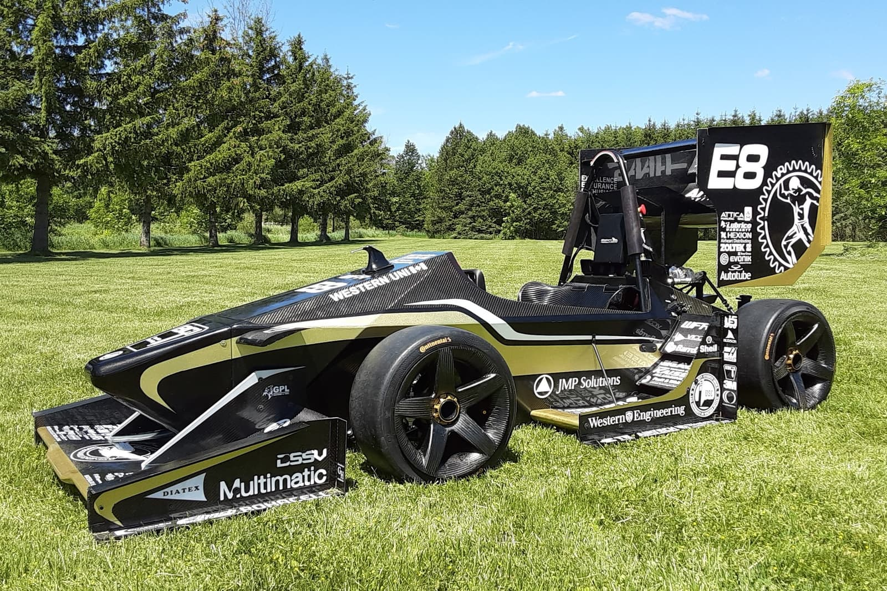
Formula SAE
A team of passionate students with the common goal of building a world-class electric
race car. Over the next 12 months we will design, build, and race our 3rd electric
vehicle; representing Canada and Western Engineering at International Formula SAE
competitions. WFR operates on three fundamental principles to deliver the best learning
experience to every team member:
Excellence - To develop highly skilled and effective professionals
Endurance - To ensure the long term success of the team
Enthusiasm - To have fun
Excellence - To develop highly skilled and effective professionals
Endurance - To ensure the long term success of the team
Enthusiasm - To have fun
IEEE Students' Chapter
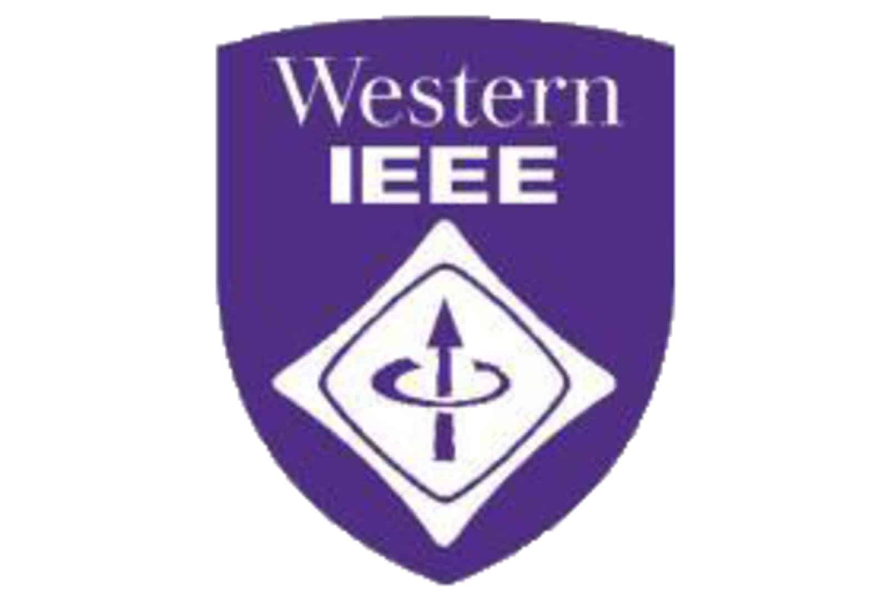
ieee.western@gmail.com
IEEE Students' Chapter
Western's IEEE is a chapter of the world's largest professional organization dedicated
to advancing technological innovation and excellence for the benefit of humanity. IEEE
and it's members inspire a global community to innovate for a better tomorrow through
its more than 420,000 members in over 61 countries, and it's highly cited publications,
conferences, technological standards and professional activities.
ieee.western@gmail.com
Innovation & Entrepreneurship Club
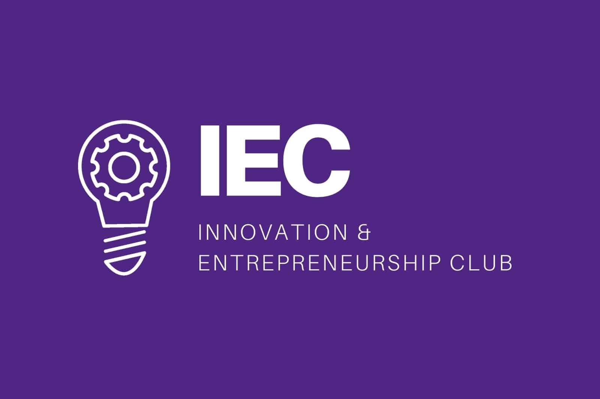
Innovation & Entrepreneurship Club
The Western Engineering Innovation and Entrepreneurship Club aims to bridge the gap
between Western Engineering and Ivey Business. The goal of this club is to connect these
two student groups to pursue innovative entrepreneurial ideas together. Club members
will be paired with Ivey Business students to work on an innovative project over the
course of the year, where the winning team will be offered a monetary grant to further
pursue their initiative. Through engaging in the project, and learning from technical
and business professionals, we aim to display the journey of engineering design in
entrepreneurial ventures. Students who join will learn how to bring an entrepreneurial
idea to life, will gain increased business and financial literacy, and will grow their
entrepreneurial network.
North American Young Generation Nuclear
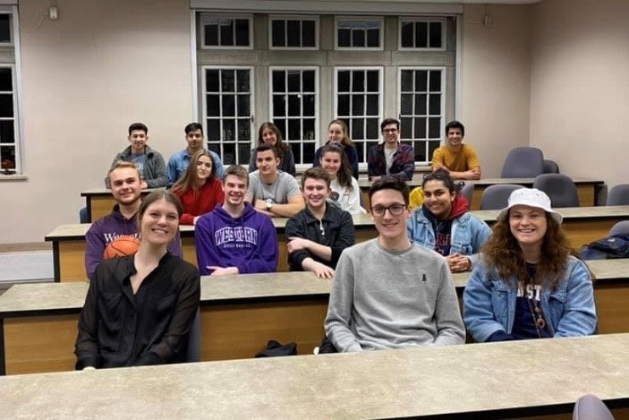
naygnwestern@gmail.com
https://naygn.org/
North American Young Generation Nuclear
The mission of NAYGN Western is to educate students about nuclear energy and the
benefits of the technology, promote networking with nuclear professionals and provide a
forum for professional development. Our goal is to create a stage for students who are
passionate about nuclear energy to network, learn and grow into young professionals.
naygnwestern@gmail.com
https://naygn.org/
Western Rocketry Club
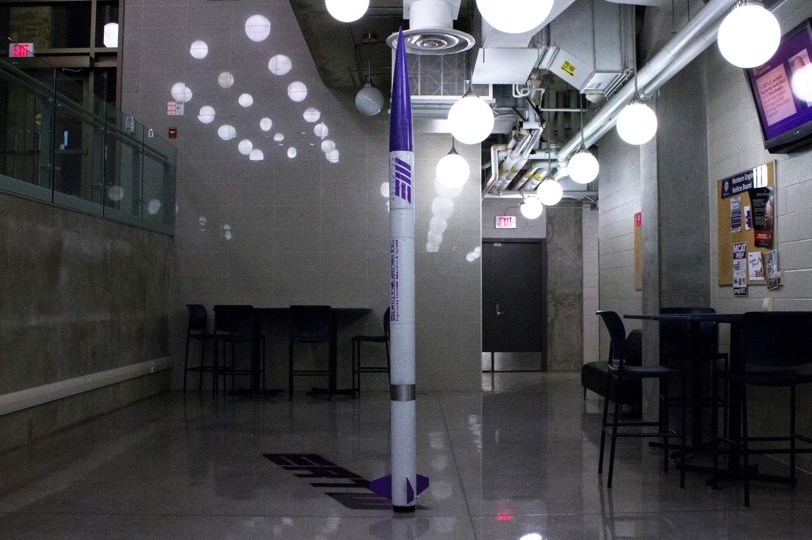
werocketry@gmail.com
http://werocketry.com
Western Rocketry Club
The Rocketry Club incorporates the key principles taught in many engineering disciplines
at Western, which is why it is ideal for engineers from several streams. The club is one
of the few Canadian representatives at the Spaceport America Competition. They believe
this helps grow both Western’s and Canada’s image on an international level. The work
done by this team IS rocket science.
werocketry@gmail.com
http://werocketry.com
Student Software Engineering Club
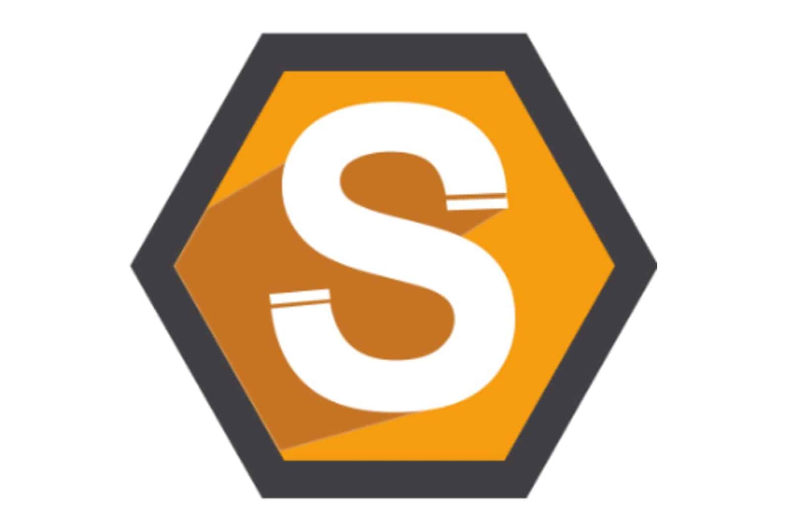
Student Software Engineering Club
The Student Software Engineering Organization (SSEO), is a club that operates to further
educate students in software development, design and deployment through different
education programs ranging from industry spotlight sessions to creating meaningful
projects based on instructional support. The aim here is to create a sense of community
for software engineering students as well as those in other disciplines who may be
interested in software but may be restricted in taking software courses. For the
upcoming year we are trying to interact more with other clubs to get collaborative
projects up and running for those clubs who need people with software engineering skills
but lack experience.
Sunstang
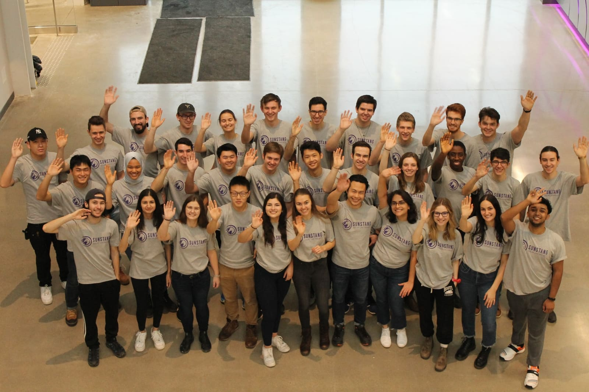
https://twitter.com/westernsunstang?lang=en
contact@sunstang.com
https://www.sunstang.com/
Sunstang
Engineering is all about innovation, and what's more innovative than a car that runs
purely off of sunlight? Sunstang is a solar car project that involves students of all
disciplines and faculties. Sunstang challenges students to incorporate the typical
mechanical aspects of a car with customized electrical systems and solar panels to
create a futuristic, eco-friendly, and competitive vehicle that can be raced at
world-wide solar challenges. Every component of the Sunstang car is designed,
prototyped, and assembled by our members. Students will gain hands-on experience through
creating composite aerobodies, performing solar cell encapsulation, building high-power
Lithium battery protection systems, and many more. Regardless of your level of skill or
knowledge, we have a job for you. Come out to see how you can help build the car of the
future!
https://twitter.com/westernsunstang?lang=en
contact@sunstang.com
https://www.sunstang.com/
WE Bots
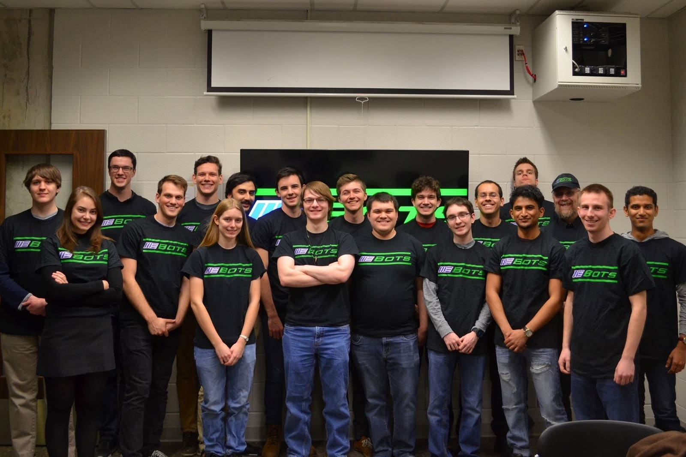
webots@eng.uwo.ca
http://webots.org
WE Bots
Are you interested in learning about the world of robotics? Join WE Bots to gain
valuable experience designing, building, and programming robots! All engineering
disciplines and experience levels are welcome. For more information, check out
http://webots.org/ and contact us at webots@eng.uwo.ca.
webots@eng.uwo.ca
http://webots.org
WE Mars
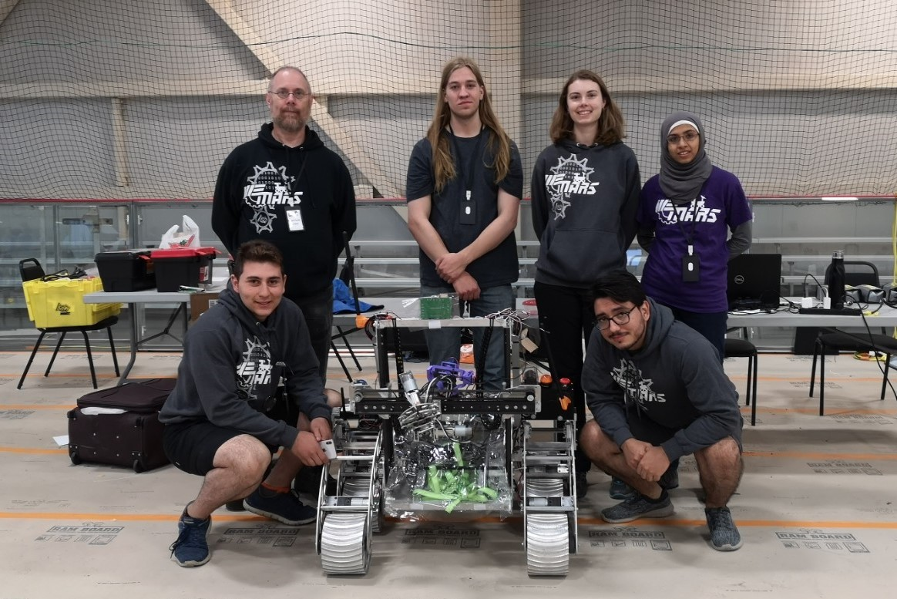
WE Mars
Calling all robot and space lovers! WE MARS Robotics Club takes part in 2 projects
annually. FIRST Robotics Competition (FRC) and a Mars Rover Challenge. Through the FRC
mentorship program the club helps high school students build robots, raise funds and
gain technical experience. Through the Mars Rover Challenge the team designs and builds
a mars rover to compete in several university rover competitions including the Canadian
International Rover Challenge.
WE Trillium Hyperloop
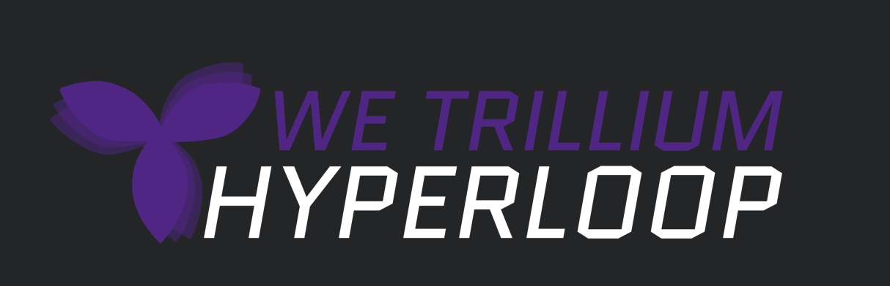
WE Trillium Hyperloop
Trillium Hyperloop is a team of students from Western University focused on innovating,
designing, and building a Hyperloop pod to compete at the SpaceX competition in 2022. WE
Trillium Hyperloop was founded in 2020 by Western Students who are passionate about
sustainable public transit and innovation.
Western Baja SAE
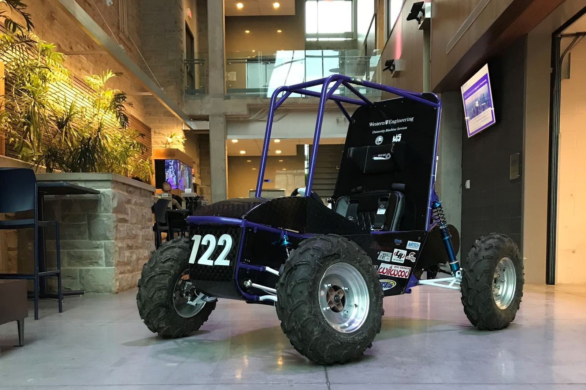
bajasae@uwo.ca
https://westernbaja.ca
Western Baja SAE
Western Baja SAE is comprised of a team of hard-working students dedicated to designing,
fabricating, and assembling an SAE class Baja vehicle. Every year, Western Baja
participates in multiple competitions across North America where the built vehicles are
judged based on Engineering Design, Maneuverability, Acceleration, and Endurance.
bajasae@uwo.ca
https://westernbaja.ca
Western EngiQueers
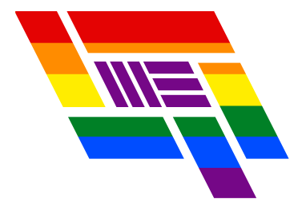
westernu@engiqueers.ca
https://www.westernengiqueers.com/
Western EngiQueers
The Western EngiQueers is a social connection and advocacy group for the LGBTQ+ and ally
communities within Western Engineering. Our main goals are to provide education
surrounding relevant topics to the faculty, provide professional development
opportunities, help local LGBTQ+ charities, and ultimately create a safe space within
Western Engineering where the students feel comfortable being themselves. We are
connected to similar clubs that exist across Canada which are currently being united
under the banner of 'EngiQueers Canada'. Locally, we are affiliated with Pride Western
as well as other faculty specific LGBTQ+ groups throughout the Western campus. If you
have any comments, questions, or concerns, please email us at
western.engiqueers@gmail.com
westernu@engiqueers.ca
https://www.westernengiqueers.com/
Western Engineering Biomedical Club
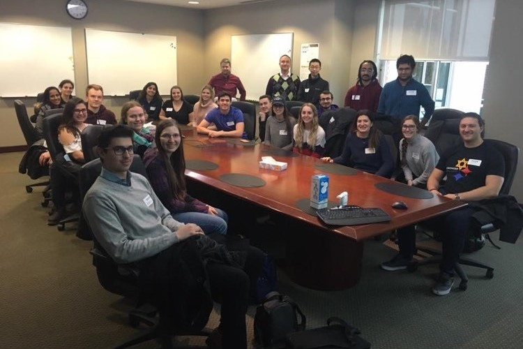
webmc.pres@gmail.com
http://webmc.ca
Western Engineering Biomedical Club
WEBMC brings together students in various disciplines and allows them to pursue their
interest in biomedical applications. This club will collaborate with graduate students,
professors and industry leaders to show undergraduate students’ various possibilities
within biomedical engineering. During the year possible events will include guest
speakers, company tours, industry spotlights, general meetings and skill labs. In
addition, professors and graduate students will share their experiences and their paths
on how they decided on a career in biomedical engineering.
webmc.pres@gmail.com
http://webmc.ca
Western Engineering Chem-E-Car Team
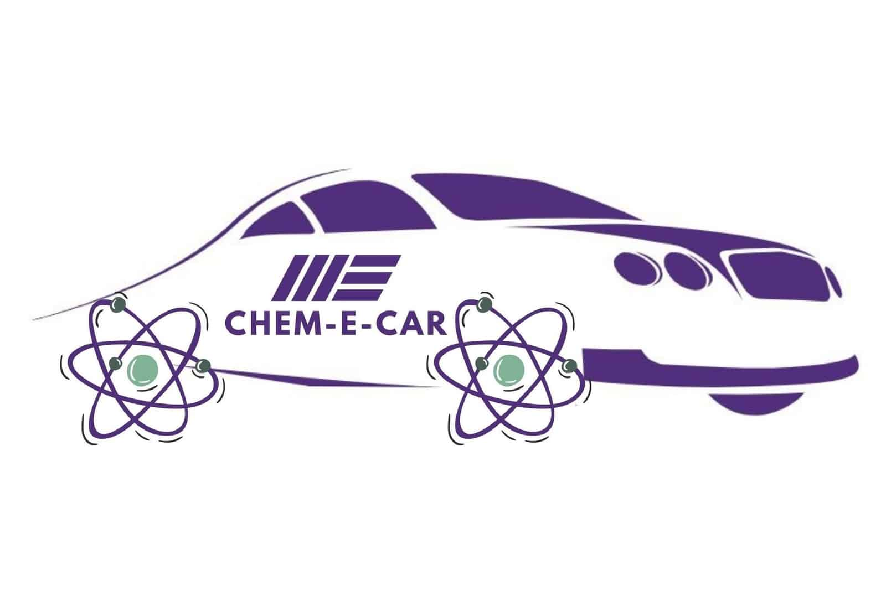
westernengineeringchemecarteam@gmail.com
https://westernengineeringchemecarteam.com/
Western Engineering Chem-E-Car Team
The Chem-E-Car team is the first of its kind in Western University. Our goal is to build
a small-scale car from scratch, from the car body all the way to the renewable chemical
power source. We aim to compete in Chem-E-Car competitions across North America and
bring glory to Western Engineering. Our current members ranging from Civil Engineering
to Chemical Engineering, all disciplines and years welcome! Members will gain practical,
hands-on experience ranging from reaction engineering to engineering design processes.
westernengineeringchemecarteam@gmail.com
https://westernengineeringchemecarteam.com/
Western Engineering Concrete Canoe Association
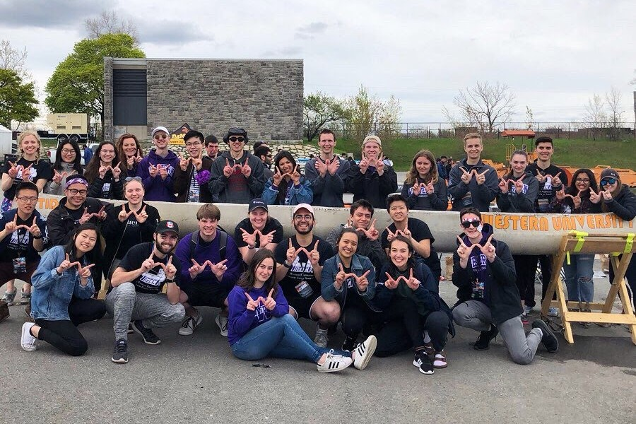
wecca.logistics@gmail.com
Western Engineering Concrete Canoe Association
The Western Engineering Concrete Canoe Association (WECCA) designs, builds, and races a
concrete canoe. Members participate in concrete mix design, mold development, and canoe
theme creation. This culminates in the Canadian National Concrete Canoe Competition
where canoes from across the country are showcased and raced.
wecca.logistics@gmail.com
Western Engineering Satellite Team
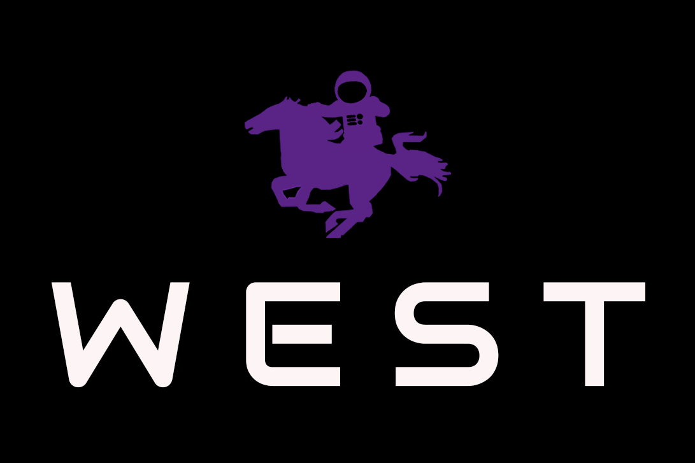
http://westernengineeringsatelliteteam.com/
Western Engineering Satellite Team
The Western Engineering Satellite Team (WEST) is a group of highly motivated students
that research and apply advanced engineering concepts to design and fabricate a
nanosatellite known as a CubeSat. Our design competes against the top universities in
Canada as part of the Canadian Satellite Design Challenge (CSDC), with the ultimate goal
of launching our satellite into Low-Earth Orbit (LEO). A project of this magnitude
offers students a unique opportunity to supplement their academic encounters with
experiential learning. It is through hands-on projects, discussion, interactions with
professionals, and having way too much fun that WEST empowers students from all
disciplines to actively participate and make an impact in the space industry.
http://westernengineeringsatelliteteam.com/
Western Engineering Toboggan Team
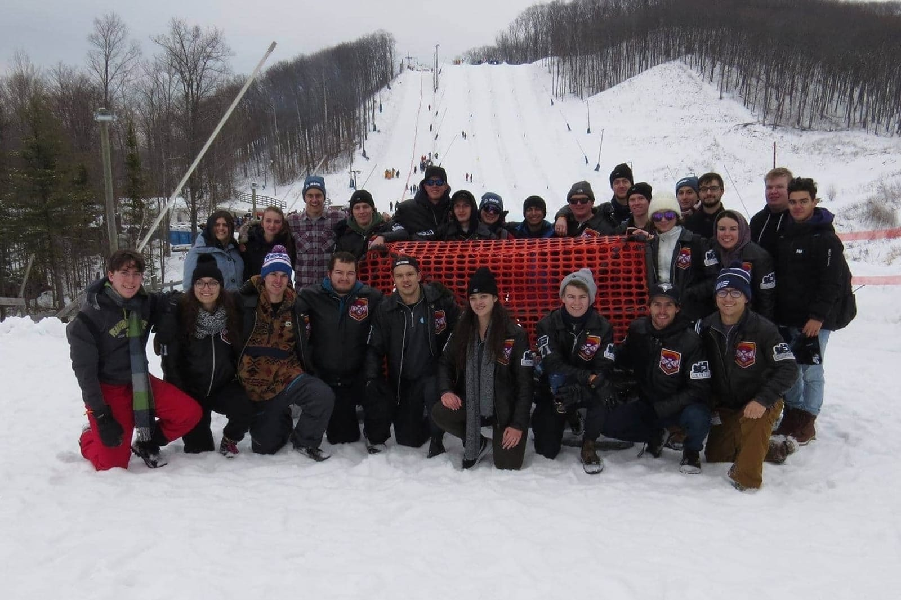
wett.captains@gmail.com
http://wetterisbetter.ca
Western Engineering Toboggan Team
Looking for hands on experience, a tight-knit team culture, and the opportunity to make
meaningful contributions to a big project? Look no further than the Western Engineering
Toboggan Team! Every year WETT takes on the challenge of designing and fabricating a
steel-framed toboggan on concrete skis, complete with steering, suspension and braking
systems. There are many opportunities to get involved with our team, regardless of your
academic year and previous hands on experience; welding, machining, painting, concrete
mixing, woodworking and the like. Come out and see for yourself why WETT has the best
culture in Western Engineering, and join us as we head to Calgary in February for the
Great Northern Concrete Toboggan Race 2021! #WetterIsBetter
wett.captains@gmail.com
http://wetterisbetter.ca
Western Society of Civil Engineering
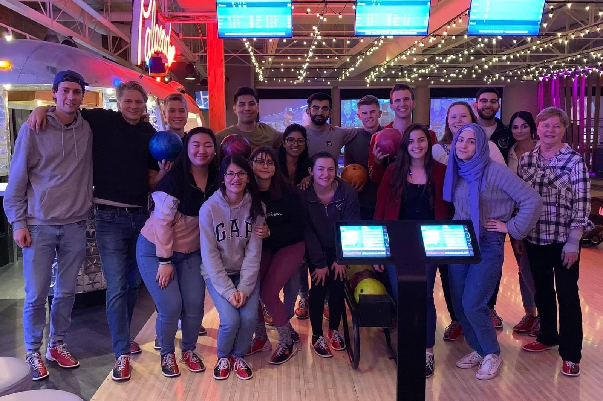
Western Society of Civil Engineering
The purpose of the Western Society of Civil Engineering (WSCE) is to enrich the
experience of students enrolled in civil engineering at the University of Western
Ontario. The WSCE organizes social events, competitions (both athletic and academic) and
field trips in order to promote extra-curricular involvement with the faculty. The WSCE
is also affiliated with the CSCE London Chapter, as we communicate all of their events
to students. All undergraduate students enrolled in the civil program at UWO are welcome
to join. If you have any questions or comments for the WSCE please email
wsce.information@gmail.com
Western Steel Bridge Team
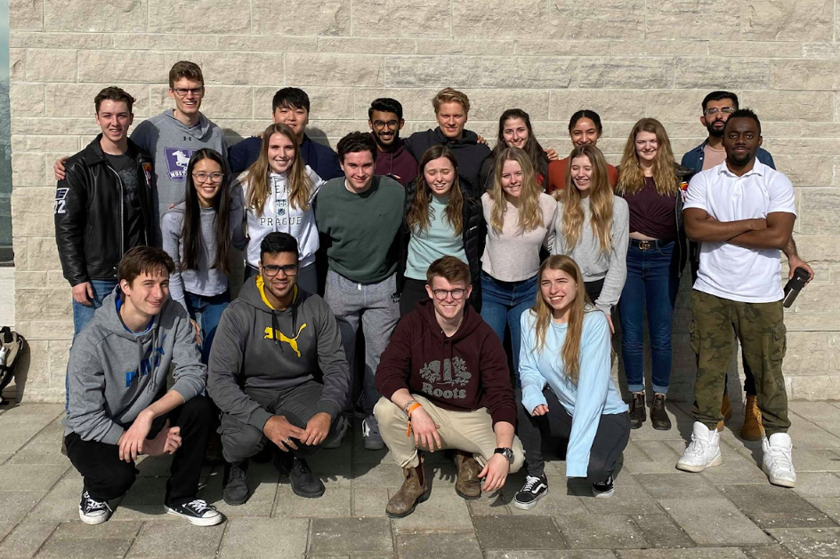
uwosteelbridge@gmail.com
Western Steel Bridge Team
The purpose of the Western Society of Civil Engineering (WSCE) is to enrich the
experience of students enrolled in civil engineering at the University of Western
Ontario. The WSCE organizes social events, competitions (both athletic and academic) and
field trips in order to promote extra-curricular involvement with the faculty. The WSCE
is also affiliated with the CSCE London Chapter, as we communicate all of their events
to students. All undergraduate students enrolled in the civil program at UWO are welcome
to join. If you have any questions or comments for the WSCE please email
wsce.information@gmail.com
uwosteelbridge@gmail.com
Women in Engineering
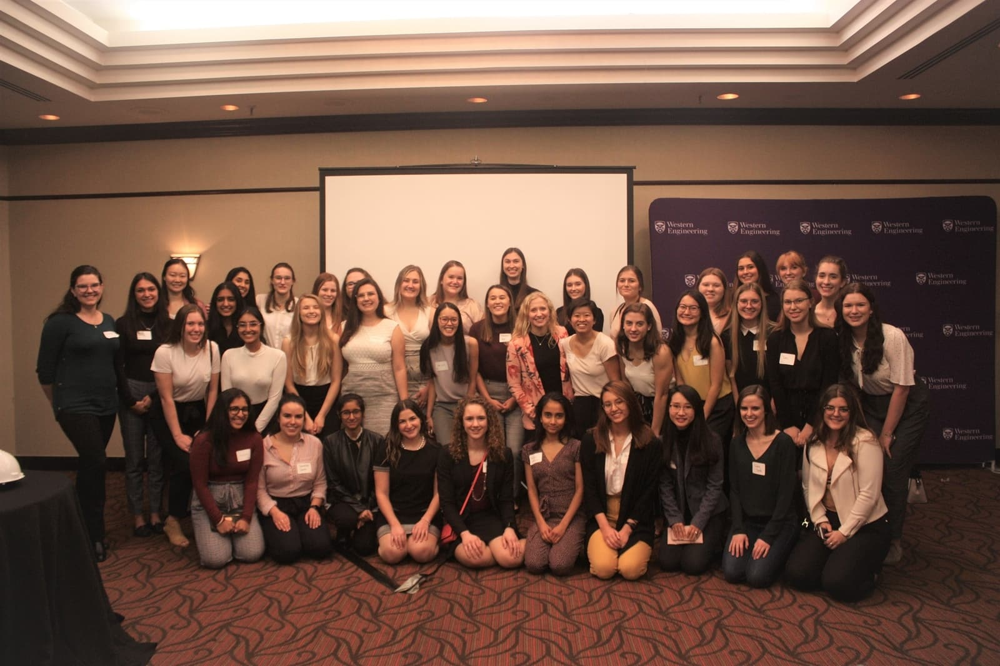
https://www.facebook.com/womeninenguwo
https://www.linkedin.com/company/women-in-eng-uwo/
https://womeninenguwo.ca/
Aer Design
Women in Engineering at Western University is a student group working to empower and
encourage current and perspective female students in the field of engineering. We
provide support and opportunities to increase women in engineering enrollment and
retention. Our mission is to provide academic and social guidance to current female
engineering students, and opportunities to network and build relationships with one
another. WIE was created in 1989 to increase the female representation in Western's
engineering program. Since then, female enrollment in Engineering at Western has
increased from 9% to 22% (last year). WIE has initiated activities and events to
encourage female engineering students to get to know each other, to help orient new
female students to university life, to encourage female high school students to enter
engineering, and to provide a support network for career development.
https://www.facebook.com/womeninenguwo
https://www.linkedin.com/company/women-in-eng-uwo/
https://womeninenguwo.ca/